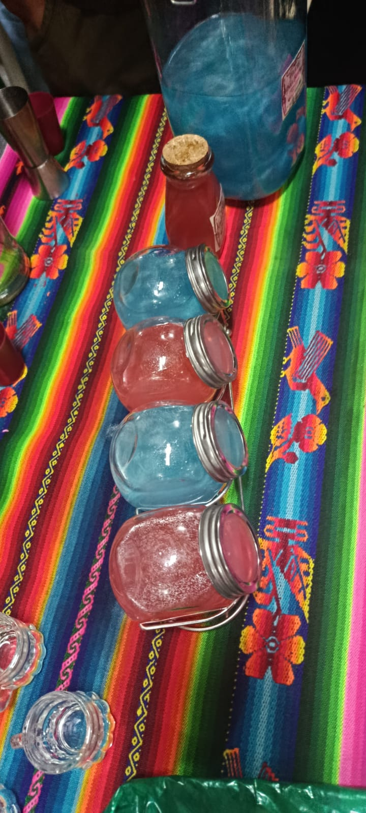
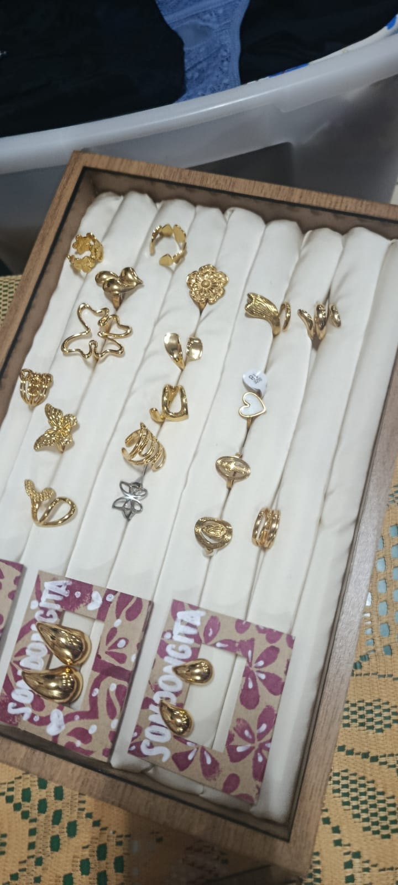

1. ¿Qué productos se pueden encontrar en el rubro de bisutería?
Respuesta: Accesorios como pulseras, collares, aretes y otras piezas decorativas.
Accesorios y piezas decorativas que combinan color, materiales y estilo personal.
Ver preguntas y respuestas ↓Accesorios y piezas decorativas que combinan color, materiales y estilo personal. Las fotografías muestran ejemplos del material recopilado durante el recorrido de la feria.






Estas preguntas resumen información relacionada con el rubro. Cuando no se contaba con respuestas registradas de una entrevista, se redactaron respuestas orientativas para completar el material.
Respuesta: Accesorios como pulseras, collares, aretes y otras piezas decorativas.
Respuesta: Cuentas, hilos, alambres, dijes y otros materiales adecuados para cada diseño.
Respuesta: Guardándolos en un lugar seco y evitando golpes, humedad o contacto con productos que puedan dañarlos.
Este es el texto utilizado como referencia para diseñar el logotipo de este emprendimiento.
Crea un logotipo elegante y moderno para un emprendimiento de bisutería y accesorios. Incorpora pulseras, collares, pendientes y piedras decorativas. Utiliza tonos dorados, plateados y colores neutros para transmitir elegancia, estilo y calidad. El diseño debe ser original, minimalista y apropiado para una tienda virtual. Utiliza un fondo transparente.